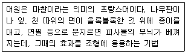
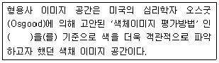
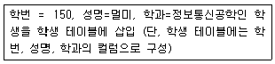
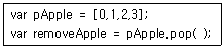
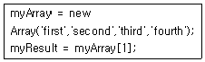
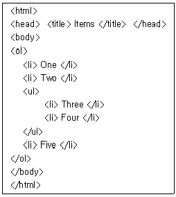
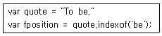
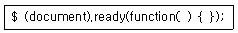
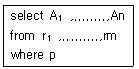

멀티미디어콘텐츠제작전문가 (2016-03-06 기출문제)
1과목: 멀티미디어개론
1. IPSec에서 제공되는 기능으로 거리가 먼 것은?
- 기밀성 보장
- 인증
- 접속 제어
- 오류보고
(정답률: 72%)

2. 리눅스의 커널에 대한 설명으로 거리가 먼 것은?
- 파일 시스템의 접근 권한 처리
- 시스템에서 처리되는 각종 데이터를 장치 간에 전송하고 변환
- 명령어 해석기 역할 수행
- 시스템 자원 분배
(정답률: 71%)
3. 2003년 매트 물렌웨그가 창립하였으며, 웹상에서 콘텐츠를 저작하고 출판할 수 있는 오픈소스 콘텐츠 관리 시스템은?
- 타조
- 워드프레스
- 세컨드 스크린
- 스마트 플러그
(정답률: 86%)
4. 해상도 2560×1440 (16:9) 이상의 픽셀 수를 지원하고 기존 일반 고선명보다 약 4배 선명한 화질을 제공하는 디스플레이 규격은?
- WXGA
- nHD
- SVGA
- QHD
(정답률: 89%)
5. 표적으로 삼은 특정 집단이 주로 방문하는 웹 사이트를 미리 감염시키고 피해 대상이 해당 웹 사이트를 방문할 때까지 기다리는 웹 기반 공격은?
- 워터링 홀
- 디도스
- 트로이목마
- 패스워드 스니핑
(정답률: 70%)
6. 디지털 신호의 전달 과정에서 일어나는 시간 축 상의 오차, 즉 신호가 지연되어 전달되지 못해 발생하는 신호의 왜곡은?
- 클리핑(Clipping)
- 지터(Jitter)
- 디더링(Dithering)
- 노이즈(Noise)
(정답률: 77%)
7. 주변장치나 CPU가 자신에게 발생한 사건을 리눅스 커널에게 알리는 것은?
- 태스크
- 시그널
- 인터럽트
- 모니터링
(정답률: 74%)
8. 컴퓨터 그래픽과 비디오카메라의 비디오 신호를 동기화 시켜주는 장치는?
- frequency
- genlock
- color palettes
- resolution
(정답률: 59%)
9. 디스크 표면의 무기물 층에 레이저를 이용해 자료를 조각해서 기록하는 방식으로 미국의 밀레니어터사에서 개발한 광 저장 장치는?
- DVD
- M-DISC
- Blu-ray Disk
- Magnetic tape
(정답률: 60%)
10. 홈 네트워킹에서 사용되는 홈 게이트웨이 기술이 아닌 것은?
- HAVi
- UPnP
- Jini
- SNMP
(정답률: 64%)
11. IEEE에서 제정한 802 표준안 프로토콜에 대한 설명으로 거리가 먼 것은?
- 802.5 : 요구 우선순위기반 애니 LAN
- 802.3 : CSMA / CD 이더넷 표준
- 802.3u : CSMA / CO 고속이더넷 표준
- 802.4 : 토큰 패싱 버스 표준
(정답률: 56%)
12. inode로 불리는 데이터구조를 할당하여 관리하는 리눅스 커널의 기본 기능은?
- 커널 프로그래밍
- 메모리 관리
- 프로세스 간 통신
- 파일 시스템
(정답률: 64%)
13. 전송계층에서 데이터를 세그먼트 단위로 전송하고 오류 제어 및 흐름 제어를 제공하는 프로토콜은?
- TCP
- UDP
- ICMP
- SMTP
(정답률: 73%)
14. 3차원 영상에서 왼쪽 눈과 오른쪽 눈에 맺히는 영상의 차이로 인해 입체감을 느끼는 것은?
- 수직 시차
- 과도 발산
- 회전 정렬 시차
- 양안 시차
(정답률: 90%)
15. C클래스 네트워크를 24개의 서브넷으로 나누려고 한다. 각 서브넷에는 4~5개의 호스트가 연결되어야 한다. 적절한 서브넷 마스크는?
- 255.255.255.248
- 255.255.255.192
- 255.255.255.240
- 255.255.255.224
(정답률: 48%)
16. 운영체제에서 매개변수를 전달하는 일반적인 방법으로 거리가 먼 것은?
- 매개변수를 레지스터를 통해 전달
- 매개변수를 큐를 통해 전달
- 매개변수를 스택을 통해 전달
- 매개변수를 메모리 내의 블록이나 테이블에 저장 후 블록의 주소를 레지스터로 전달
(정답률: 61%)
17. 이미지에서 어둡거나 밝은 부분을 균등하게 조정해 줌으로써 너무 어둡거나 너무 밝은 이미지의 명암을 보기 좋게 하는 이미지 필터링은?
- 디더링
- 히스토그램 평준화
- 윤곽선 추출
- 샤프닝
(정답률: 75%)
18. LAN 카드의 “Promiscuous Mode”를 이용하여 모든 트래픽을 도청하는 행위를 무엇이라 하는가?
- 부트파일 바이러스
- 디도스
- 스니핑
- 백도어
(정답률: 85%)
19. OSI 7 Layer에서 응용계층 프로토콜이 아닌 것은?
- TCP
- FTP
- HTTP
- TELNET
(정답률: 73%)
20. 커버로스에 대한 설명으로 옳은 것은?
- 공개키 암호 방식 사용
- 패스워드 추측 공격에 강함
- 티켓 기반 보안 시스템
- 시스템을 통해 패스워드는 평문 형태로 전송
(정답률: 58%)
2과목: 멀티미디어기획및디자인
21. 굿 디자인(Good Design) 조건으로 틀린 것은?
- 가독성
- 경제성
- 독창성
- 기능성
(정답률: 68%)
22. 다음 내용이 설명하는 디자인 기법은?

- 몽타주
- 프로타주
- 꼴라주
- 마블링
(정답률: 79%)
23. 음양오행설에서 볼 때 오정색 중 청색이 의미하는 방위는?
- 동
- 서
- 남
- 북
(정답률: 77%)
24. 인체스케일에 대한 척도인 모듈러(Modulor)의 기본 개념은?
- 그리드
- 비례
- 연관
- 일관성
(정답률: 78%)
25. 다음 중 색의 3속성이 아닌 것은?
- 색상(Hue)
- 질감(Texture)
- 명도(Value)
- 채도(Chroma)
(정답률: 89%)
26. 오스트발트 색채조화론에 대한 설명으로 옳은 것은?
- 회전 혼색법을 사용하여 두 개 이상의 색을 배열 하였을 때 그 결과가 명도5(N5)인 것이 가장 조화되고 안정적이다.
- 명도는 같으나 채도가 반대색일 경우 채도가 높은 색은 좁은 면적, 채도가 낮은 색일수록 넓은 면적일 때 조화롭다.
- 색표계의 3대 계열인 백색량, 흑색량, 순색량은 서로 조화를 이룬다.
- 미도M과 먼셀 표색계를 모체로 하며 감정적이고 다루어지던 통념을 배격하고 과학적이고 정량적인 방법의 색채조화론이다.
(정답률: 63%)
27. 빅터 파파넥 (Victor Papanek)이 주장한 디자인의 복합 기능에 대한 설명으로 거리가 가장 먼 것은?
- 텔레시스: 보편적인 것이며, 인간의 마음 속 깊이 자리 잡고 있는 충동과 욕망의 관계
- 방법: 재료와 도구를 타당성 있게 사용하는 것
- 필요성: 경제적, 심리적, 정신적, 기술적, 지적 요구에 의해 전개되는 것.
- 용도: 기능과 실용성을 바탕으로 하며 목적에 부합되는 것
(정답률: 80%)
28. 게슈탈트 법칙으로 틀린 것은?
- 접근성
- 유사성
- 용이성
- 폐쇄성
(정답률: 78%)
29. 다음 ( )에 들어갈 내용은?

- SD법
- ISCC-NBS법
- JIS 표준색표
- PCCS 표색계
(정답률: 63%)
30. 색이 서로 달라도 그림과 바탕의 밝기 차이가 없을 때 그림으로 된 문자나 모양이 뚜렷하지 않게 보이는 것은?
- 색음현상
- 리프만 효과
- 색상현상
- 베졸트 브뤼케 현상
(정답률: 61%)
31. 연변대비에 대한 설명으로 가장 알맞은 것은?
- 면적이 커지면 실제보다 명도, 채도가 높아 보이는 현상
- 색의 차고 따뜻함에 변화가 오는 대비 현상
- 어떤 색을 보고 난 뒤 다른 색을 보는 경우 먼저 본 색의 영향으로 색이 다르게 보이는 현상
- 어떤 두 색이 맞붙어 있을 때 그 경계 부분에서 대비 현상이 더 강하게 나타나는 현상
(정답률: 81%)
32. 보색에 대한 설명으로 거리가 먼 것은?
- 보색을 혼합하면 무채색이 된다.
- 보색이 인접하면 채도가 서로 낮아 보인다.
- 인간의 눈은 스스로 평형을 유지하기 위해 보색잔상을 일으킨다.
- 유채색과 나란히 놓인 회색은 유채색의 보색기미를 띤다.
(정답률: 70%)
33. 픽셀과 뚜렷한 경계선의 거친 부분을 부드럽게 하는 기법은?
- Dithering
- Smooth Shading
- Surface Modeling
- Anti-Aliasing
(정답률: 81%)
34. 흰색 배경 위에 검정 십자형의 안쪽에 있는 회색 삼각형과 바깥쪽에 있는 회색 삼각형을 비교하면 안쪽에 배치한 회색이 보다 밝게 보이고, 바깥쪽에 배치한 회색은 어둡게 보이는 효과는?
- 스티븐스 효과
- 베너리 효과
- 애브니 효과
- 에렌슈타인 효과
(정답률: 51%)
35. 시각전달 디자인 분야에 해당되지 않는 것은?
- 타이포그래피
- 포스터 디자인
- 무대 디자인
- 광고 디자인
(정답률: 84%)
36. 강조에 대한 설명으로 거리가 먼 것은?
- 대비, 분리, 배치, 색채에 의해서 표현된다.
- 점층적으로 변화하는 것에 나타난다.
- 시선을 집중시키는데 효과적이다.
- 화면에서 분명하게 드러나는 것으로 한 가지 요소가 다른 많은 요소들과 다를 때 나타나는 현상이다.
(정답률: 87%)
37. 독일 공예계에 미술의 실생활화, 기계생산품의 미적규격화 등을 주장하였으며, 독일공작연맹을 결성한 사람은?
- 월터 그로피우스
- 월리엄 모리스
- 필립포 마리네티
- 헤르만 무테지우스
(정답률: 62%)
38. 미술 공예운동에 대한 설명으로 옳은 것은?
- 기계생산의 질을 향상시키려는 정책을 세웠다.
- 수공업이 가지고 있는 아름다움을 회복시키려고 중세적 직인제도의 원리에 따른 공예개혁을 시도 하였다.
- 전통적인 유럽역사양식으로부터 탈피하고자 하였다.
- 형태를 기하학적으로 정리하여 기계생산이 가능하게 하였다.
(정답률: 82%)
39. 동작이나 목록이 메뉴나 아이콘으로 표현되며, 키보드나 마우스를 사용하여 진행되는 방식의 직관적인 사용자 인터페이스를 무엇이라 하는가?
- GUI
- CBUI
- HSV
- CMYK
(정답률: 88%)
40. 입체디자인의 상관요소가 아닌 것은?
- 위치
- 방향
- 공간
- 길이
(정답률: 55%)
3과목: 멀티미디어저작
41. 자바스크립트의 브라우저 내장 객체 중 독립적으로 사용되며, 브라우저의 종류, 사용언어, 시스템 종류 등의 정보를 제공하는 객체는?
- Navigator 객체
- Window 객체
- History 객체
- Location 객체
(정답률: 63%)
42. DBMS의 필수 기능이 아닌 것은?
- 정의기능
- 조작기능
- 제어기능
- 접근기능
(정답률: 61%)
43. 자바스크립트 코드를 html 파일에 집어넣기 위해 사용되는 태그는?
- BODY
- HEAD
- NSCRIPT
- SCRIPT
(정답률: 70%)
44. XML 스키마에 대한 설명으로 틀린 것은?
- 복합형 데이터 형 정의를 사용할 수 있어 관계형 데이터 베이스와의 연동이 수월하다.
- 스키마 표현법은 EBNF를 갖고 있어서 XML 데이터 구조를 정의하는데 적합하다.
- 스키마 안에 있는 일부 내용을 재사용할 수 있는 등 확장성이 뛰어나다.
- 내용 검증을 위한 방법으로 검사 패턴을 정규식으로 표현할 수 있다.
(정답률: 60%)
45. 데이터베이스의 SQL 표현으로 옳은 것은?

- insert into 학생 set 학번=150, 성명='멀미', 학과='정보통신공학'
- insert into 학생 values(150, '멀미', '정보통신공학')
- insert 학생 into(150, '멀미', '정보통신공학')
- insert 학생 set(150, '멀미', '정보통신공학')
(정답률: 55%)
46. 자바스크립트에서 웹 서버와 통신 시 웹 클라이언트가 요청을 전송한 후 웹 서버가 처리중일 때 웹 클라이언트 측에서도 웹서버의 결과를 기다리지 않고 동시에 조작을 계속하는 것은?
- ajax
- dom
- jquery
- cross domain
(정답률: 50%)
47. Rumbaugh 의 객체지향분석 모형으로 거리가 먼 것은?
- Relational Modeling
- Object Modeling
- Functional Modeling
- Dynamic Modeling
(정답률: 57%)
48. 관계 대수의 연산 중 릴레이션에서 참조하는 속성을 선택하여 분리해 내는 연산은?
- 셀렉션
- 조인
- 디비전
- 프로젝션
(정답률: 44%)
49. 객체지향 개념에서 객체가 메시지를 받아 실행해야 할 객체의 구체적인 연산을 정의한 것은?
- 추상화
- 상속성
- 메소드
- 캡슐화
(정답률: 68%)
50. 자바스크립트 연산에서 remove Apple의 값은?

- ０
- １
- ２
- ３
(정답률: 47%)
51. Flash 5.0에서 다음 코드의 결과 값은?

- first
- second
- third
- fourth
(정답률: 57%)
52. 다음 코드에 대한 결과 값은?

- o One
o Two
o Three
o Four
o Five - ⒈ One
⒉ Two
⒊ Three
⒋ Four
⒌ Five - ⒈ One
⒉ Two
o Three
o Four
⒊ Five - ⒈ One
⒉ Two
o Three
o Four
⒌ Five
(정답률: 72%)
53. 자바스크립트 코드에서 변수 fposition의 결과 값은?

- ０
- １
- ２
- ３
(정답률: 51%)
54. 자바스크립트(JavaScript)에서 두 개의 배열을 하나의 배열로 만들 때 사용되는 메소드(Method)는?
- deleteRow( )
- sort( )
- concat( )
- slice( )
(정답률: 67%)
55. jQuery 문장에 대한 설명으로 옳지 않은 것은?

- Html을 읽어 들일 때까지 대기 후, 스크립트를 실행한다.
- $ ready(function( ) { }); 로 단축표현이 가능하다.
- document는 현재 문서를 의미하는 내장 객체이다.
- jQuery 이벤트 메소드 중 하나이다.
(정답률: 56%)
56. 다음 SQL 질의에 대한 관계 대수식은? (단, p는 where 조건절)

- πr1,.........,rm (σр(A1＋........＋An))
- σA1,........,An (πр(r1×........×rm))
- πA1,........,An (σṕ(r1×.........×rm))
- σr1,.........,rm (πṕ(A1×........×An))
(정답률: 51%)
57. 구글 I/O에서 발표한 차세대 웹 동영상 코덱으로 로열티 비용이 없는 개방형 고화질 동영상 압축 형식의 비디오 포맷으로 VP8 비디오와 Vorbis 오디오로 구성되어 있으며 HTML5에서 작동되는 동영상 포맷은?
- H.264
- Ogg
- WebM
- Mov
(정답률: 62%)
58. XML의 DTD에 대한 설명으로 거리가 먼 것은?
- 문서에 허용되는 엔티티를 정의한다.
- 문서에서 허용되는 엘리먼트형을 정의한다.
- 각 엘리먼트에 할당되어 있는 속성을 정의한다.
- DTD에서 태그의 속성은 ATTRIBUTE로 정의한다.
(정답률: 54%)
59. SQL 데이터 조작어(DML)가 아닌 것은?
- drop
- select
- insert
- update
(정답률: 48%)
60. 데이터베이스의 데이터모델링 방법으로 거리가 먼 것은?
- 개념적 데이터 모델링
- 논리적 데이터 모델링
- 비절차적 데이터 모델링
- 물리적 데이터 모델링
(정답률: 74%)
4과목: 멀티미디어제작기술
61. 색수차가 발생하는 빛의 성질은?
- 분산
- 반사
- 편광
- 간섭
(정답률: 58%)
62. 래스터 디스플레이 장치를 이용하여 흑백이 아닌 칼라 색을 표현하는데 필요한 최소한의 비트 플레인(bit plane)은?
- 3
- 4
- 5
- 6
(정답률: 48%)
63. 음파가 1회 진동하는데 걸리는 시간은?
- 음압
- 주기
- 음색
- 주파수
(정답률: 75%)
64. 화상 회의 및 화상 전화를 응용하기 위한 영상 압축 코딩표준은?
- G.727
- H.235
- H.225
- H.263
(정답률: 77%)
65. 음의 마스킹 효과와 관계없는 것은?
- 음악에 잔향 부가
- BGM으로 주변 소음 마스킹
- 노래에 잔향 부가
- 대역폭이 증가하면 라우드니스 감소
(정답률: 73%)
66. 아날로그 사운드를 디지털로 변환하는 과정 중에 발생하는 지터(Jitter) 에러에 대한 설명으로 옳은 것은?
- 디지털 신호의 전달 과정에서 일어나는 시간 축상의 오차
- 아날로그 파형을 양자화 비트로 표현하면서 발생하는 값의 차이
- 가청 주파수보다 높은 고주파 성분 발생으로 인한 에러
- 사운드에 원래 고주파 성분이었던 울림이 없어지고 저주 파수의 방해음이 발생하는 것
(정답률: 70%)
67. 다각형으로 표현된 곡면의 각 꼭지점에서 반사광의 강도를 보강하여 내부의 화소에 반사광의 강도를 계산하는 음영법은?
- Gouraud shading
- Phong shading
- Ray tracing shading
- Z buffer shading
(정답률: 55%)
68. 3차원 모델링 과정에서 A,B 두 모델을 결합하여 새로운 모델을 제작할 때 수학적 개념을 이용하여 합치거나 빼는 모델링 방법은?
- B워프(B Warp)
- 불린(Boolean)
- 모프(Morph)
- 메타볼(Meta Ball)
(정답률: 63%)
69. 표본화 된 펄스의 진폭을 디지털 2진부호로 변환시키기 위하여 진폭의 레벨에 대응하는 정수 값으로 등분하는 과정은?
- 부호화
- 복조화
- 양자화
- 평활화
(정답률: 76%)
70. 공기 중 파장이 긴 단색광은?
- 파랑
- 빨강
- 보라
- 초록
(정답률: 74%)
71. 3차원 컴퓨터 그래픽에서 면을 구성하는 최소 단위로 다각형을 의미하는 것은?
- Vertex
- Polygon
- Edge
- Object
(정답률: 83%)
72. MPEG-2 영상부호화에 기본적으로 사용되는 DCT변환에서 수행되는 블록단위로 맞는 것은?
- 2×4
- 8×8
- 8×16
- 32×32
(정답률: 64%)
73. 시각적으로 인접한 두 화면 간에 상관도가 높은 특징을 이용하여 매크로 블록으로 두 화면간의 움직임을 추정하여 보상함으로써 중복성을 제거하는 방법은?
- Temporal Redundancy
- Statistical Redundancy
- Spatial Redundancy
- Special Redundancy
(정답률: 48%)
74. 광원에서 1m 떨어진 곳의 조도가 100 럭스[lux] 일 때 10m 떨어진 곳의 조도[lux]는?
- 1
- 10
- 25
- 50
(정답률: 58%)
75. 두 개 이상의 음파가 겹쳐져 더해질 때, 파동의 합성에 의해 동위상으로 겹쳐지면 진폭이 증가하고 역위상으로 겹쳐지면 진폭이 감소하는 것은?
- 굴절
- 반사
- 회절
- 간섭
(정답률: 71%)
76. 주파수가 200Hz인 음의 주기[sec]는?
- 0.5
- 0.⑤
- 0.0⑤
- 0.00⑤
(정답률: 54%)
77. 라우드니스 레벨에서 1sone은?
- 10 phon
- 20 phon
- 30 phon
- 40 phon
(정답률: 51%)
78. 물체에 반사된 빛이 다른 물체에 반사될 때까지 추적하여 투영과 그림자까지 완벽하게 표현하는 랜더링 방식은?
- 레이 트레이싱(Ray Tracing)
- 범프 매핑 (Bump Mapping)
- 스캔 라인 (Scan Line)
- 텍스쳐 매핑 (Texture Mapping)
(정답률: 76%)
79. 마이크와 앰프가 한 채널로 연결되어 있으며, 한 채널의 스피커 시스템으로 재생하는 방식은?
- Monophonic
- Binaural
- Stereophonic
- Diotic
(정답률: 73%)
80. CD의 표준 샘플링 주파수와 양자화 비트 수는?
- 44.1kHz, 16bit
- 46.1kHz, 32bit
- 48.2kHz, 32bit
- 49kHz, 16bit
(정답률: 75%)